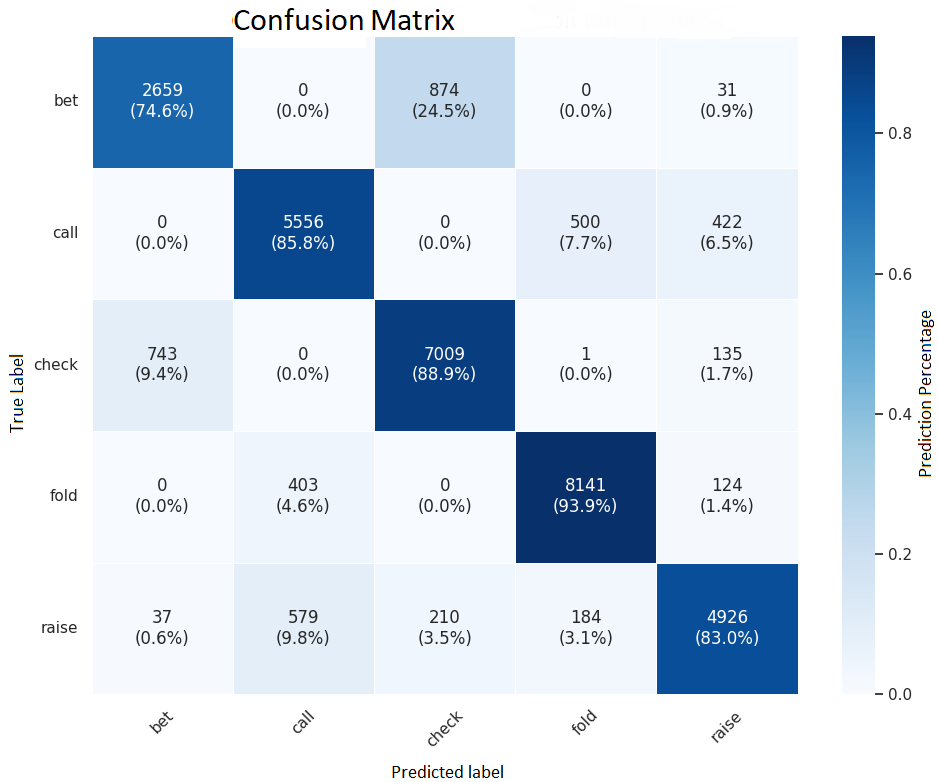

Strong ability to learn and produce structured text representations
–> Fine-tuning is effective (Huang 2024, Zhuang 2025)
Data collection
Hands from my own professional play
Dates: 2018-2020
Format: Spin & Go (2 or 3 players)
Buy-ins: €50, €100, €250
Sample size: n = 320,000
Data processing
Original hand:
Game #20396217527 starts.
Game #<do not remove this line!> starts.
***** Hand History for Game 20396217527 *****
NL Texas Hold’em €250 EUR Buy-in - Friday, July 10, 18:41:29 CEST 2020
Table 250€ SIT’N GO JAQKPOT (276572612) Table #1 (Real Money)
Seat 2 is the button
Total number of players : 2/3
Seat 1: Dimitrov98 ( 605 )
Seat 2: FrenchBaguette ( 895 )
Trny: 276572612 Level: 3
Blinds(20/40)
FrenchBaguette posts small blind [20].
Dimitrov98 posts big blind [40].
** Dealing down cards **
Dealt to FrenchBaguette [ Kd 7s ]
FrenchBaguette raises [60]
Dimitrov98 calls [40]
** Dealing Flop ** [ 5h, 8d, 4s ]
Dimitrov98 checks
FrenchBaguette checks
** Dealing Turn ** [ 4d ]
Dimitrov98 checks
FrenchBaguette checks
** Dealing River ** [ Td ]
Dimitrov98 checks
FrenchBaguette checks
Dimitrov98 shows [ 9d, Qh ]a pair of Fours.
FrenchBaguette shows [ Kd, 7s ]a pair of Fours with King kicker.
FrenchBaguette wins 160 chips from the main pot with a pair of Fours with King kicker.
Processed hand :
{“instruction”:“pos:H=SB stacks:H=15.1,BB=22.4 hand:Kd7s | pre: H r2,BB c | flop:5h8d4s BB x,H x | turn:4d BB x,H x | river:Td SB x, H:”,“output”:“x”,“input”:““}
Supervised fine-tuning (SFT)
Model: Llama 3.1-8B-Instruct
Advantages:
Open weights
Small enough for single-GPU
Limitations:
Beginner level at poker
Lower capacity than larger models
Training time: 10 hours on one GPU
SpinGPT-SFT: imitation results
Test set (n = 32,000)
Accuracy (exact-match):
80% (exact)
84% (with tolerance)
Illegal actions: 1.4%

Benchmark : Slumbot
Slumbot
ACPC 2018 champion poker AI
Common benchmark (easy API evaluation)
Warning
Depth mismatch: SpinGPT 0–35 BB vs Slumbot 200 BB.
Applying a short-stack policy at deep stacks → over-shoving → losses.
Patch: replace all-ins with 2/3-pot when facing no bet; otherwise 3x raise
Results vs Slumbot (1)
Agent
Win rate (BB/100)
95% CI (BB/100)
Hands played
SpinGPT‑SFT
13.4
± 12.9
30,000
Interpreting win rate (BB/100)
< 0: loses
≈ 0: break-even
0-6: wins
> 6: wins by a wide margin
Results vs Slumbot (2)
Agent
Win rate (BB/100)
95% CI (BB/100)
Hands played
Year
BabyTartanian8
3.6
± 1.2
N/A
2016
ReBeL
4.5
± 1.0
N/A
2020
AlphaHoldem
11.2
± 1.6
100,000
2022
PokerGPT
15.8
± 4.9
10,000
2024
SpinGPT-SFT
13.4
± 12.9
30,000
2025
Reinforcement Learning (RL)
Objective: retrain SpinGPT-SFT to approach Game Theory Optimal (GTO).